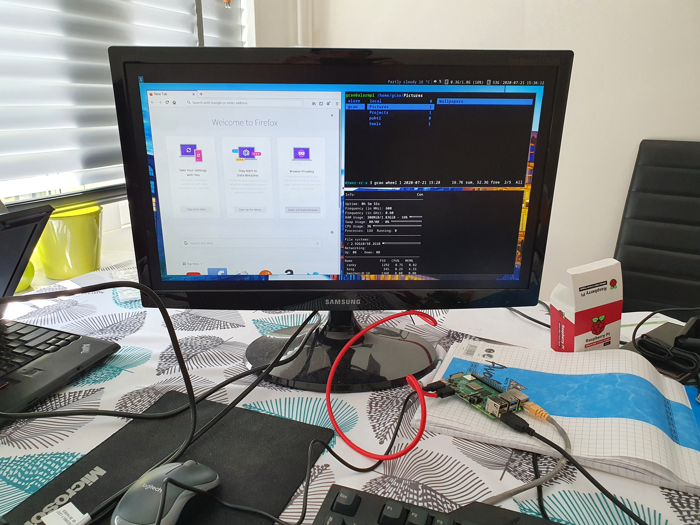
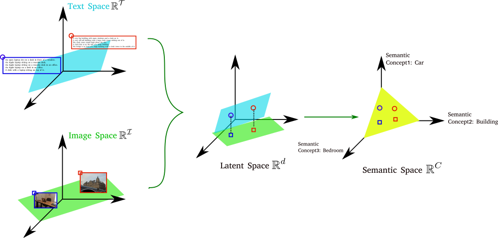

Hello there! My name is Guanqun Cao, and I'm currently working in a car company about data analytics for highly automated driving. I have extensive research experience in multimedia retrieval, image processing and machine learning.
I was born and grew up in historic Beijing, and feel very fortunate to have lived in six European countries in the last 14 years. You can find my CV here. I am also on Linkedin and Github. Feel free to contact me at Firstname.Lastname@ieee.org.
About me professionally, I like Linux and developing efficient neural nets. Here below, you will know more from my educational background, projects I am/was working on, and things I am interested in. Thank you for visiting my homepage!
I did my PhD in Tampere on multi-view data analysis. It was motivated by improving the performance of a multimedia retrieval system, and later the research was focused on heterogeneous data mining.
My major contribution is a unified solution for subspace learning methods, which is extensible for multiple views, supervised learning, and non-linear transformations. Traditional statistical learning techniques including Canonical Correlation Analysis, Partial Least Square regression and Linear Discriminant Analysis are studied by constructing graphs of specific forms under the same framework. Methods using non-linear transforms based on kernels and (deep) neural networks are derived, which lead to superior performance compared to the linear ones. A novel multi-view discriminant embedding method is proposed by taking the view difference into consideration.
The project addressed challenges in representing multi-view data across different tasks. The proposed solutions have shown superior performance in numerous applications, including object recognition, cross-modal image retrieval, face recognition and object ranking.
I feel really grateful and fortunate to be advised by Profs. Moncef Gabbouj and Alexandros Iosifidis, who not only gave me words of wisdom about the project, but also help shape me to be a better person. You will find more info from the publication page. It's an honor that the thesis was recognized distinction by the university.
It was a multi-discipline MSc programme that equipped me with knowledge and skills in color science, advanced algorithms, color image processing and multimedia analysis. I also had a unique experience in studying in three different countries, including St-Etienne in France, Granada in Spain and Gjøvik in Norway. The two-year programme was fully funded by EU under Erasmus Mundus scheme.
It's a direct entry into the final year BEng programme and I studied electronic and computing engineering at UoB. My final-year project was about content-based image retrieval in 2007. Several MPEG-7 image descriptors were used and K-means clustering was employed for image indexing. We made a comparison with ImageNet which was at its early stage from WordNet. I am grateful to receive a scholarship from the university.
I studied electronic and information engineering at this highly-ranked university in central China, and acquired solid knowledge in data structure, C++, analog and digital electronics, stochastic processes, statistics, calculus and linear algebra. Moreover, it broadened my horizon in both academic and social worlds, which continuously benefitted me in the long run. Additionally, I feel proud of having lived in Wuhan after what it has been through recently. It is a widely acclaimed city by the locals thanks to its hospitality as reflected in this video.
Industrial Experience
I spent the last three years in auto industry based in Gothenburg, Sweden, and worked on a series of projects including improving perception algorithms (end-to-end object detection and tracking in low-end embedded devices), geo-spatial data mining and recently data analytics for safety assurance of automated driving. What I gained is not only the project experience with a car OEM, but the deep understanding about the landscape of car industry. Prior to that, I used to work on projects with Intel Corp. and Tieto Oy on mobile imaging and data analytics for object rankings, respectively.
Papers
Please go here or Google Scholar to find an updated list of my publications.
Projects

My current interest is about Edge AI, specifically speeding up Deep Neural Networks by proposing efficient approximations. More to come about this topic.
I attended Why R? 2020 conference and gave a talk about predicting air quality in California using geo-spatial data mining techniques. Specifically, I provided a solution to predict the air quality index (AQI) in exact locations by coupling the observations from sparsely distributed stations with gridded simulation outputs using a spatial Bayesian method. It is my humble effort to combat against climate change. The talk was the first in the left video and its slides can be found here. You could get the code from the github repo.
A way of video captioning by Neuraltalk2 (2015) is provided. Meanwhile, we also show how to extract the deep image feature of VGG-16, and detect shot boundaries using the feature. We finetune the MS-COCO model, annotate the key frames, and return the captions to the video sequence. Though there is a significant progress in image captioning, our technique to cope with image sequencies is still relevant. The implementation can be found here.

Cross-modal image retrieval is one of the applications from my PhD project. We project features from both textual and image space into a common subspace to provide an effective and precise way to search items across modalities.
Interests
I collected a list of videos about self-driving cars, machine learning, robotics and entrepreneurship.